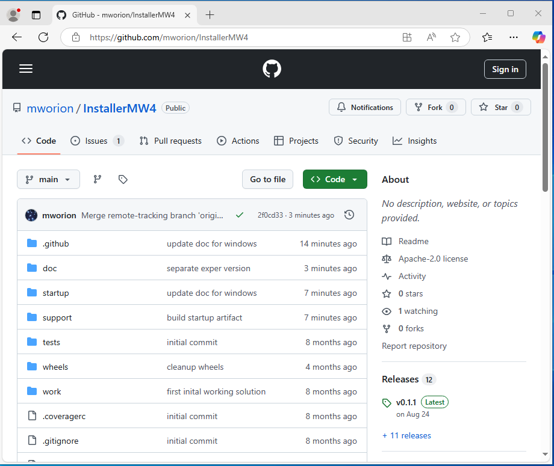
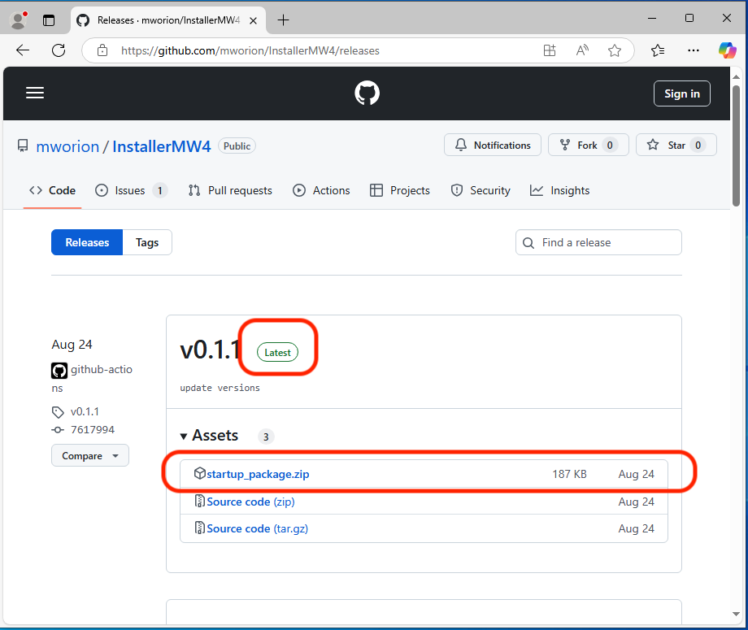
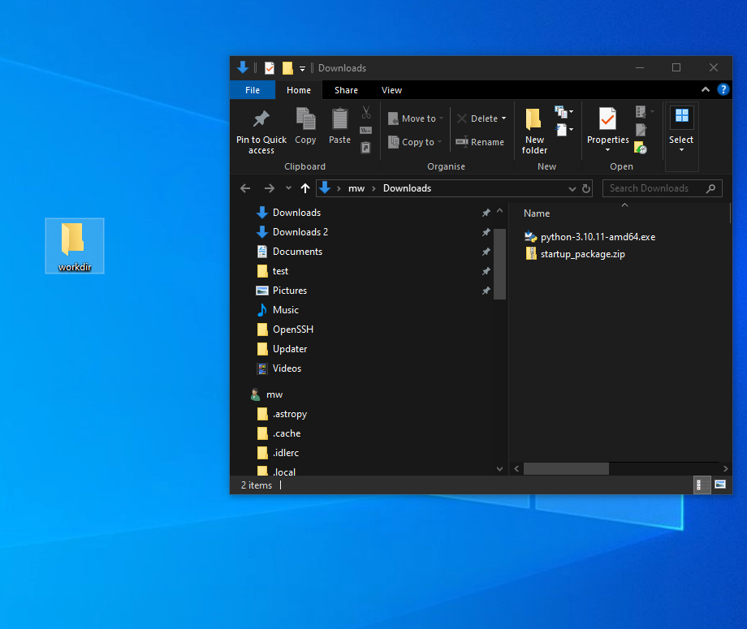
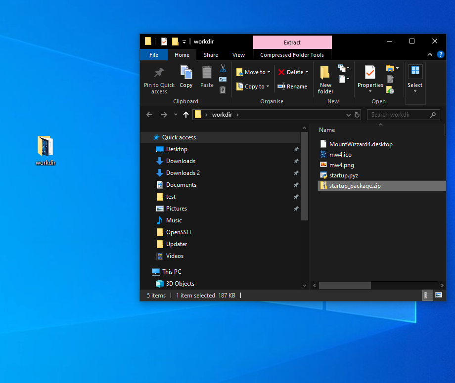
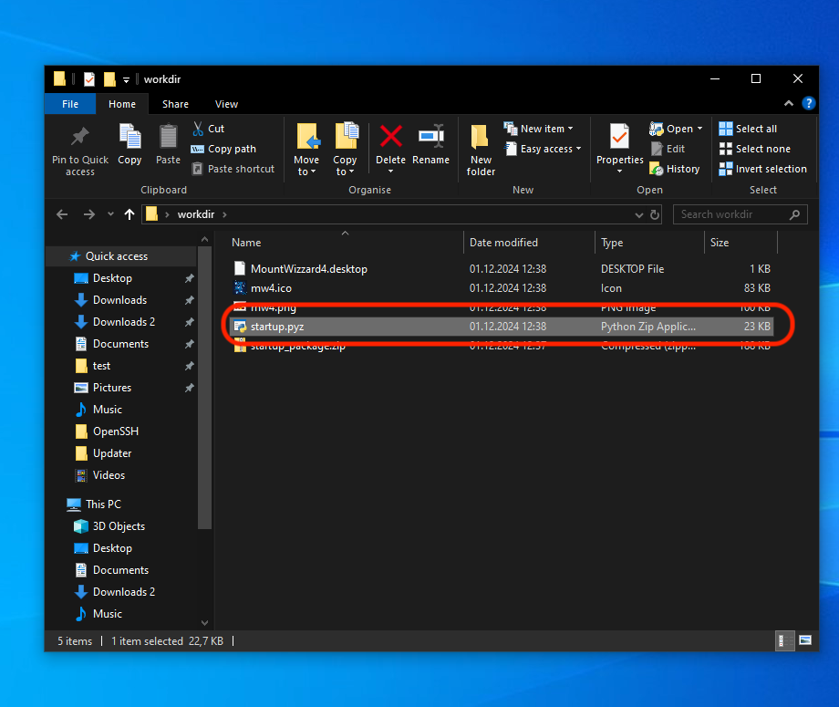

Install MountWizzard4¶
When starting with the installation of MountWizzard4, python 3.8-3.10 for versions 3.x and python 3.10-3.13 for versions 4.x should be successful installed. To check, open a terminal (available on all platforms) and run the command
python --version
virtualenv --version
On windows you can’t call python3, but you have to run the command
python --version
In one of the choices you should see the version number of the installed and available packages. For python it should say 3.8.x … 3.12.x (depending on the version of MountWizzard4). Starting with InstallerMW4 version 4.x, the script does not support installing versions of MountWizzard4 < 3.0.0 anymore.
Hint
MountWizzard4 does not need admin rights to install or run. To avoid problems with accessing directories or file please ensure, that you run install and MountWizzard4 itself as normal user!
To install MountWizzard4 on your computer, there are some support available for Windows, MacOSx and Ubuntu to make it a little bit easier to install and run MountWizzard4. The scripts are online, and available from Github.
Installing with installer version 4.x:¶
The install procedure also got improved: You will have only a single compressed python script (startup.pyz) which is valid for all platforms and does all things the different existing scripts stand for. Additionally some support files are present to make for Linux a good starter Please download the package and unzip it to get the content. You will find four files:
startup.pyz -> the script for doing all the work
mountwizzard4.desktop -> support for ubuntu / linux running the script
mw4.png -> icon for mountwizzard4.desktop
mw4.ico -> icon to customize the link in windows for running the script
Process for installation¶
Step 1¶
Please create a working directory of your choice and location. For MacOSx I would recommend not using a location on the desktop as it might cause troubles with execution right in newer OSx installations. The directory can be renamed later on, it also can also be moved to any other location. Copy the scripts for your platform into this directory.
Step 2¶
Download the lastest release of the installer script and unzip it’s content to your work dir. You will find it here:
{kind=link}
and there select the latest release:
{kind=link}
Here is the direct link to the latest release: https://github.com/mworion/InstallerMW4/releases
Please move the downloaded file to your work dir
{kind=link}
and unzip it there
{kind=link}
Step 3¶
Run the installer script, on windows you should be able to start the script just be double click on it (you see the filetype is already linked to a python interpreter):
{kind=link}
in all other platforms you start it with:
python startup.pyz # Windows
python3 startup.pyz # Ubuntu, ARM64 and OSx
This script will prepare an virtual environment, install all necessary libraries - if applicable for arm64 platforms (RPi’s) also precompiled wheels and MountWizzard4 itself. After a successful installation, the script will start MountWizzard4 the first time. During this first run MountWizzard4 will create some subdirectories in your working folder. When starting, a splash screen shows the progress of it’s initialization. After first start the directory should look like (example Windows)
For newer MountWizzard4 versions, there is no need for precompiled wheels anymore as they are provided directly from PyPi.
Remarks for installation¶
MountWizzard4 is installed inside the virtual environment venv in your work dir. Once installed, the startup.pyz script is also used for starting MountWizzard4 at any time.
Hint
Please check if an online connection is available on your computer during installation as the libraries and MountWizzard4 is installed from online sources.
Over time, there might be some improvements also made for these scripts. So if you had installed MountWizzard4 some time ago and will install new setups, it might be helpful to check if some new scripts are available for better handling. When running the script, it will check for updates and gives you some hints.
The new script 4.x supports multiple platforms (Windows, MacOSx, ARM64 and x86 Linux distributions! Still for some you need to do some preparations.
Short videos for installation¶
For a better impression of how MountWizzard4 could be installed, there are some special videos showing a installation on different platforms.
|
If you see the upper window, you succeed and from now on you are able to customize your setup of MountWizzard4 and it’s features. Please refer to the MountWizzard4 documentation for further information.
Setting up Ubuntu¶
For Ubuntu the scripts also include an icon file (mw4.png) as well as a desktop description file (MountWizzard4.desktop). In order to use this add-on, please adjust the directories used in this file:

Unfortunately this is broken un Ubuntu 20.04LTS, see (including the workaround):
https://askubuntu.com/questions/1231413/basic-desktop-actions-are-not-available-on-ubuntu-20-04
If you install nemo (hint as workaround) as file manager, the desktop icons will work.